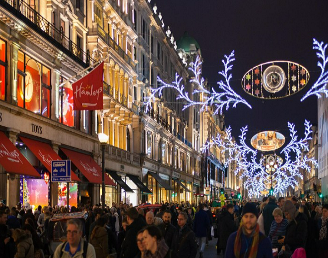
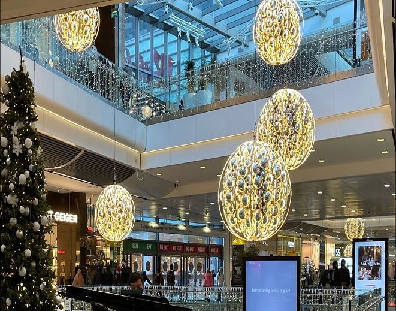
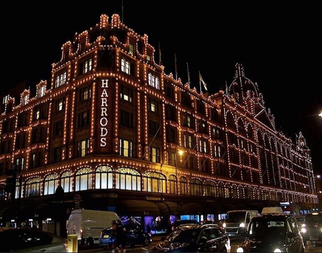

옥스퍼드 스트리트
런던의 웨스트민스터 지역의 주요 거리로 마블 아크 서부터 토트넘 코트 로드까지 이어져 있다. 또한 유럽에서 유명한 쇼핑 거리로 하루에 약 50만 명의 쇼핑객들이 찾으며 약 300여 개의 스토어들이 있다. 또한 고급 레스토랑도 많다. 매년 11월부터 1월에는 멋진 크리스마스 장식을 구경할 수도 있다. 크리스마스 시즌의 시작을 알리는 이곳에서의 점등식은 전통적으로 매우 유명하다.
웨스트필드 스트랫포드
런던 최대의 쇼핑몰이자 영국에서 네 번째로 큰 쇼핑몰로 런던의 외곽에 위차하고 있다. 약 350여 개의 스토어들이 입점해있으며 의류, 뷰티, 악세서리 등 쇼핑부터 레스토랑과 카페, 바들이 있어 런던 여행의 하루로 손색이 없다. 또한 영화관과 세 개의 호텔 그리고 영국 최대의 카지노와 볼링장 또한 쇼핑몰 안에 입점해있다. 런던에서 하루 동안 즐길 거리를 찾는다면 좋은 선택지일 것이다.


해러즈